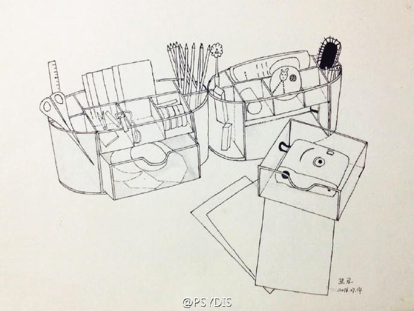
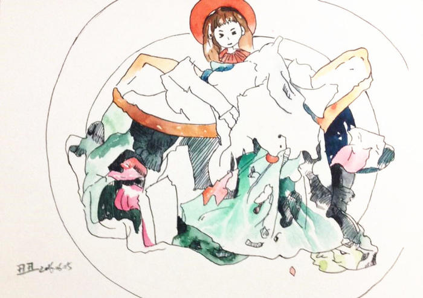
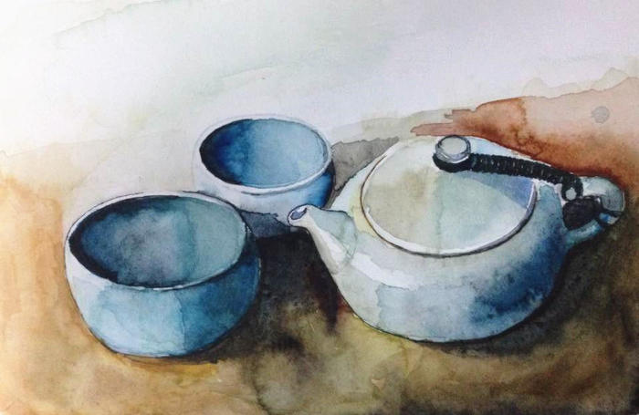
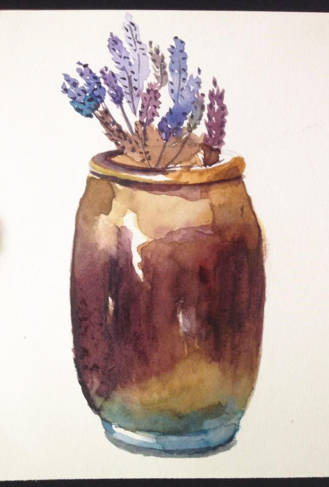
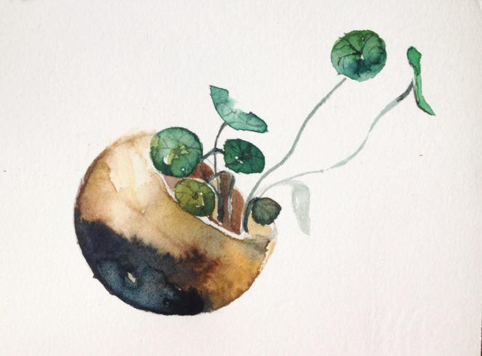
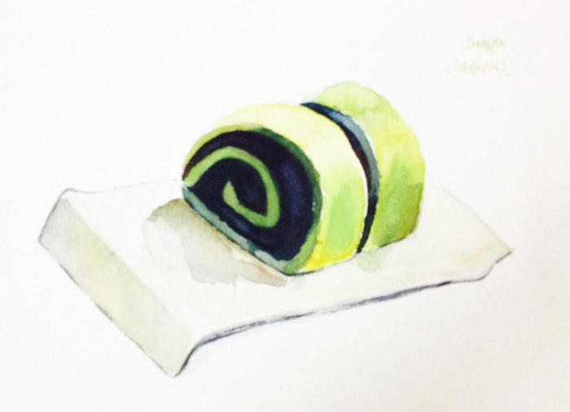

本篇文字记录于2016年11月30日。
我其实学画画没有太久。正式学习之前，我可以说是零基础。上面这幅图是今年正式学习画画所画的第一幅画，是在3月28号，到现在将近8个月的时间，这期间有中断过，所以严格算起来，学习画画大概半年左右。这么一个小白能对画画有多少感悟呢？所以以下是这半年我学习画画的初级体验。
为什么要学画画？
1）入“坑”的契机：
从小学开始，我对画画有一点接触但不深，真正埋下画画种子的在初中时的美术课。当时的我对于学画画这件事情非常着迷，每一次作业练习都很认真地去做，每一次老师都给我打90分、95分，后来忘记是什么契机了，老师选我当上了我们班的美术课代表。这对我是一种莫大的肯定。
印象中初中的美术课只上了一年，随后就被其它课程挤占了。在中考结束后的那年暑假，我迷上了叫《犬夜叉》的日本动画片，并且把自己关在房间里好几天，画了一幅剧中女主角阿离的画，那是第一次对于画画进行的主动尝试，画完之后还蛮有成就感的。
之后高中和大学都没有机会碰过画笔。
直到今年的三月份，在朋友圈里看到一个朋友转发的一个画画班招生的信息，很兴奋地报名，至此正式进入画画的“坑”。
2）入“坑”的真实原因：
如果说“入坑”的第一步是报名，那么让我持续待在的原因是：从画画中，我找到了乐趣。在画画中，我发现自己能独坐两三个小时不觉得累，在这个过程中，内心非常地安静，周围的一切都不复存在，此刻只有我、画纸、画笔和颜料，线条一笔一笔地勾勒修改，不同的颜料融合之后变成一种新的色彩，不同的绘画方法能表达不同的画面效果，以及画完一整幅画之后内心的充实和满足感非常强烈。这样的感觉是我之前都没有经历过的，一幅一幅地练习下来，我越发觉得这是我想要一直持续下去的状态。
3）外界的反馈：
前面说的，之所以爱上画画，是我找到了我内心真正渴望做的事，这种感觉让我停不下来。但同时，我除了跟自己玩之外，我也是一个需要外界反馈的宝宝。刚开始画的时候，我不太敢把画发出来，怕被人嘲笑，掐灭了内心的这根小火苗，只敢把画发到微博上。
偶然的机会，我把画给了同事看、也给了初次认识的朋友看，得到了一些肯定，老师也有表扬我，慢慢地把画发到朋友圈，收获了一些夸奖。这样的反馈让我觉得自己在画画这件事情上还是有一点悟性的。当然别人的评价并不一定客观，但是给了我一些动力继续投入到画画这件事情上。
新手入“坑”的正确姿势是什么？作为一个小白，要避免哪些“坑”？
1）盲目探索的“坑”
在对画画还是“一无所知”的阶段，想要快速提升画画的技能，我觉得需要一个老师帮助自己入门。在经济能力许可的情况下，尽量去找到一个能力相当的老师，她可以告诉我需要买哪些画材、教给我简单的技法激发我的兴趣并建立对画画的自信，然后逐步相对系统地学习画画相关的技能。在不断模仿练习的过程中，慢慢熟悉怎样造型、运用线条、把握层次和明暗关系以及色彩的晕染技巧，然后再培养迁移能力，进入创作的阶段。
我曾经跟着老师学习一段时间，中途有打算自己摸索，发现完全不知道要画什么以及怎样画。当然自己去网上搜索材料也是可以的，但是不够系统，并且搜索也挺花时间的。在初级阶段，跟着老师学习基础的技能，建立对画画初步的认知很重要。所以在中途摸索了一段时间之后，我就报了班，打算先跟着老师学习一年。
2）孤芳自赏的“坑”
一个人闷着头练，不如和小伙伴一起练。
同样的学习内容，为什么别人画那么快，别人进步那么快，反思自己为什么做不到？在和别人的对比中，能够督促自己练习；
同样的学习内容，自己可以对比和别人的差距在哪里，自己需要做一些什么样的调整？
同样的学习内容，如果比别人画得好，那么可以建立更多的自信。
因为我报的是线上的培训班，老师的微信群里有200名学生，很自然的有这样的学习环境；另外可以加入线上的打卡群，也是一个很好的学习环境，在里边每天汇报画画完成情况的同时，还会做一些分享，可以对自己的学习做一些总结，也可以相互学习经验、进行点评等。
3）买、买、买 的“坑”
自从报班以来，画画班的同学入手了不止一盒颜料，买了各种水彩纸、各种画笔，也有不少同学去刻了印章。
然后老师一直跟我们强调，刚开始学习画画，不需要太追求工具的好坏，通过一套画材慢慢掌握画画的技法才是更重要的。
我属于一个比较听话的学生，跟着老师学了大半年，仍然使用的是刚报名时候的荷尔拜因小分装盒，之前的水彩纸用完了新买了一些，另外增添了几只画笔，印章也没有刻。
上面这个观点主要针对的是初学者，当然在经济条件许可、以及在技能提升到一定阶段之后，是可以多尝试不同的画材的，只要确定是自己真正需要的，不盲目跟风即可。毕竟真正需要提升的是画画的技能，对吧？
如何“一本正经”地学画画？
避免了上边三个大坑之后，如何“一本正经”地学画画呢？
1）培养画画的习惯
画画是一项需要长期积累的事，隔一段时间不练，很容易手生，最好是每天都练。比如说加入一个线上打卡群，由于群规的限制，每天都需要做一些画画相关的事情才算完成打卡。这是一个非常有利于学习画画的方式，这样可以主动或者被动地每天学习跟画画相关的内容。
目前我学习的方式是，先看一遍老师录的视频，观察老师是怎样造型和上色的；看完视频之后，自己会去画线稿；画完线稿再跟着老师的视频，边模仿边上色；在自己画的过程中，去体会自己哪些地方做的好，哪些地方需要提升，并把自己体会到的东西运用到下一次的练习中；我也会去看同学画的画，在心里点评别人画的好的地方和做得不够的地方，这个过程也是建立自己判断力和认知的过程。
近几个月，我按着这种方式去学习，慢慢发现自己在造型结构、线条运用、透视关系、明暗关系、配色和晕染这些技法上都有了一定的提升。
3）建立与外界的反馈机制
这里的外界，指的是画画班、学习群之外的人群。把画发到朋友圈或者微博，是一个很好检验自己画画水平的方式。自我感觉画得不错，别人反馈一般，很大可能是自我感觉太良好了，需要继续努力呢；当自己觉得一般，朋友还挺认可的时候，又收获了一些自信。
     
上边这几幅是我最近画的自己相对满意的画，画得不多，现在回头看，又多多少少发现一些可以改进的地方。
小结
以上是我画画半年以来的一些感悟，稍微做一下扩展，学习画画技能的过程也可以适用于学习其它的技能：
第一，明确自己发自内心想要去做这件事，那么便获得内在的动力；同时外界如果有正向的反馈会有助于自己建立更多的自信继续投入到这项技能的学习中；
第二，学习一项技能，找到这方面相对厉害的老师带自己入门能节省很多时间避免走很多弯路；同时独自练习不如和别人一起练；另外明确学习的目标是为了提升技能，工具很重要，但更重要的是提升技能；
第三，打磨一项技能需要持续投入，并进行反思总结，而适当的外界反馈有利于调整自己的行动。
此篇文章版权归 Sonya所有,转载请获得作者授权。